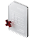

<section class="protection" aria-labelledby="protection-title">
  <div class="container">
    <div class="protection__content">
      <span class="protection__eyebrow">Защита платежа</span>
      <h2 class="protection__title" id="protection-title">Что произойдёт, если платёж не дойдёт до адресата</h2>
      <p class="protection__description">Обещание стопроцентной проходимости проверить невозможно, поэтому мы его не даём. Вместо этого порядок действий при возврате прописан в договоре, и вы можете прочитать этот пункт до подписания.</p>
      <a class="ui-button ui-button--small protection__link" href="#documents">Пункт договора о возврате <span aria-hidden="true">↗</span></a>
    </div>
    <div class="protection__cards">
      <article class="protection__card">
        
        <div><h3>Платёж вернулся</h3><p>Если перевод отменён из-за сделки или ограничений банков-корреспондентов, вернём деньги на ваш счёт в течение 3 дней или отправим их по новому маршруту.</p><span>Подробнее в п. 2.1.5 договора ›</span></div>
      </article>
      <article class="protection__card">
        
        <div><h3>Платёж завис в банке</h3><p>Пока деньги не поступили поставщику, сделка не считается закрытой. Направим запросы в банки и не подпишем закрывающие документы до получения средств.</p></div>
      </article>
      <article class="protection__card">
        
        <div><h3>Ошибка в реквизитах</h3><p>Если в инвойсе указаны неверные реквизиты, переоформим платёж и отправим средства по корректным данным.</p></div>
      </article>
    </div>
  </div>
</section>
